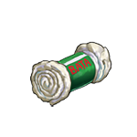

Получено: файл; исходный URL. Без перекодирования; при замене домена идентичность оригиналу не проверена, авторство не установлено. Страница: источник.
Вата
ВКонтакте; данные из ZOMBIA; 01 Августа 2011, 19:28- Тип
- нет данных
- Покупка
- нет данных
- Продажа
- нет данных
- Как получить
- [изображение: стоунхедж, зомби ферма] Создать в Стоунхедже (ВКонтакте, ZOMBIA; требует сверки).
- Применение
- нет данных
- Особенности
- нет данных
- Версия и дата
- ВКонтакте; данные из ZOMBIA; 01 Августа 2011, 19:28
Данные по источнику · ВКонтакте, ZOMBIA · 01 Августа 2011, 19:28; дата редакции не установлена
Предварительно: Данные одной исторической фанатской страницы; цифры и подписи изображений требуют сверки. Описание и условия сохранены по колонкам без додумывания.. Требуется сверка.
- Описание материала
- [изображение: зомби ферма, зомби мания, вата] Стоимость: 2000 монет
- Участвует в строительстве
- нет текстовых данных; возможны неподписанные изображения
- Как достать
- [изображение: стоунхедж, зомби ферма] Создать в Стоунхедже
- Участвует в создании
- [изображение: углеволокно, зомби ферма]


Данные по источнику · браузерная Зомби Ферма / Зомби Мания; платформа требует проверки · дата URL не гарантирует дату редакции
Предварительно: Индивидуальная страница прочитана автоматически, подписи значков могут содержать ошибки; даты редакции и независимость от ЗомбиСити не установлены.. Требуется сверка.
- Основной блок страницы и подписи изображений
- Материал [иллюстрация: Вата] Вата Цена покупки: 2 [иллюстрация: Зомбаксы] Цена продажи: 2000 [иллюстрация: Монеты] Продать или купить Вату за ресурсы игры можно в разделе Обменка Зомби Фермы Вата - очень недешевый материал Зомби Фермы, в том плане, что для ее создания с нуля нужно много Секвойи. Для создания ваты нужна специальная постройка, которую можно найти в недостроенном виде на Страшном острове игры. Вату можно создать в постройке Стоунхендж: Вата [иллюстрация: Вата] = 2 Бумага [иллюстрация: Бумага] + 5 Шестерня [иллюстрация: Шестерня] [иллюстрация: Стрелка] Стоунхендж [иллюстрация: Стоунхендж] Вата участвует в создании сложных материалов: Пенопласт [иллюстрация: Пенопласт] = 1 Вата [иллюстрация: Вата] + 1 Огонь [иллюстрация: Огонь] [иллюстрация: Стрелка] Эйфелевая [иллюстрация: Эйфелевая] Углеволокно [иллюстрация: Углеволокно] = 10 Черная рука [иллюстрация: Черная рука] + 5 Вата [иллюстрация: Вата] [иллюстрация: Стрелка] АЭС [иллюстрация: АЭС] Принимает участие в строительстве некоторых зданий: На Альфу [иллюстрация: На Альфу] Врата [иллюстрация: Врата] Вавилон [иллюстрация: Вавилон] Джокер [иллюстрация: Джокер] Альпийский дом [иллюстрация: Альпийский дом] Синий клубок [иллюстрация: Синий клубок] Перевал №3 [иллюстрация: Перевал №3] Вход на арену [иллюстрация: Вход на арену] Вата - приз за выполнение квестовых заданий: Домой в копи [иллюстрация: Домой в копи] Тревога [иллюстрация: Тревога] Просьба [иллюстрация: Просьба] Кроль [иллюстрация: Квест Кроль игры Зомби Ферма] Вату можно найти в сокровищах: Новогодняя елка [иллюстрация: Новогодняя елка] Вишневый торт [иллюстрация: Вишневый торт] Новогодняя елка [иллюстрация: Новогодняя елка] Новогодняя елка за дубл [иллюстрация: Новогодняя елка за дублоны] Новогодняя елка за зб [иллюстрация: Новогодняя елка за зомбаксы]
Связанные сущности
нет проверенных связей — требуется сверка.